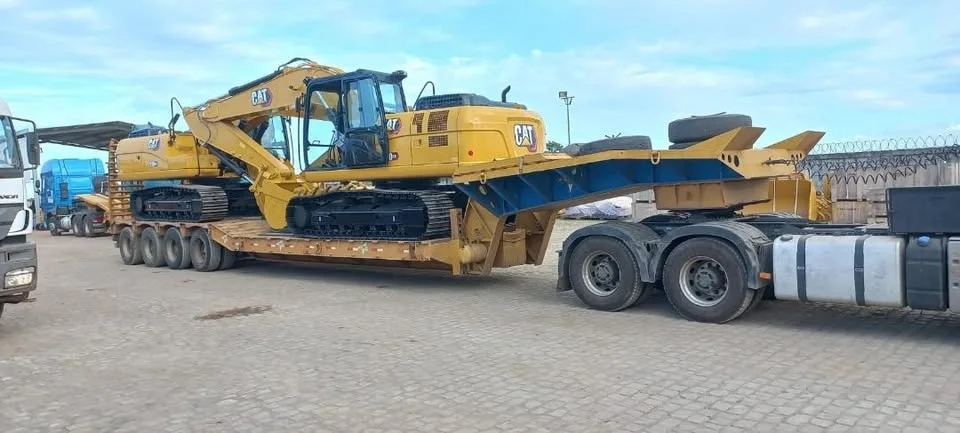

Leitura de cenário
Carga, rota e equipamento em uma decisão só.
Antes de colocar o veículo na estrada, definimos a configuração que dá previsibilidade à operação.
- Tipo e dimensões da carga
- Pontos de coleta e entrega
- Condições da rota e do prazo